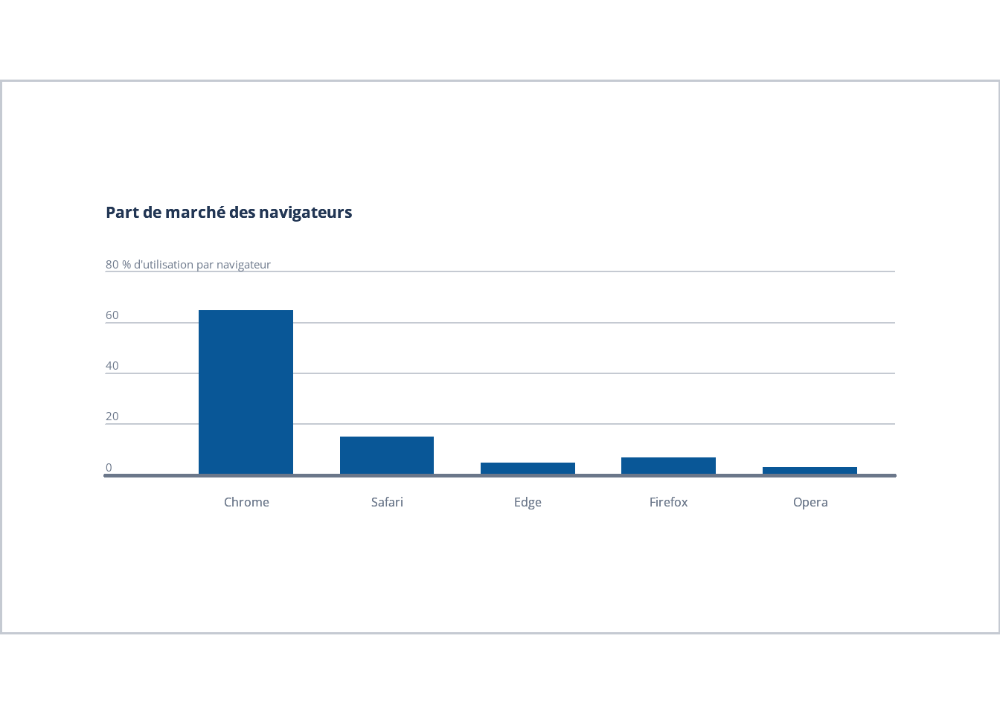

Chapitre 11 Annexe : Exemples REPREX
11.1 Exemple 1 : Part de marché des navigateurs
Voici un exemple de REPREX qui montre comment structurer un graphique en barres en suivant les bonnes pratiques de présentation.
# REPREX - Graphique des parts de marché des navigateurs avec ggplot2 et grid
# Ce script explique en détail comment construire un graphique avec des normes spécifiques de présentation.
# Importer les librairies nécessaires --------------------------------------------------------
# ggplot2 : pour créer des graphiques basés sur les principes de la "Grammaire des graphiques".
# grid et gridExtra : pour manipuler l'arrangement des éléments graphiques et ajouter des marges externes.
# showtext et sysfonts : pour utiliser des polices personnalisées (Google Fonts) dans les graphiques.
library(ggplot2) # Création de graphiques
library(grid) # Manipulation d'éléments graphiques (grille, texte)
library(gridExtra) # Arranger plusieurs éléments graphiques dans une grille
library(showtext) # Utilisation de polices Google Fonts
library(sysfonts) # Charger des polices supplémentaires
# Charger la police Google Open Sans ---------------------------------------------------------
# Nous utilisons ici la police "Open Sans" de Google Fonts pour le texte.
# Cette police est populaire et adaptée aux graphiques formels.
font_add_google("Open Sans", "open-sans")
showtext_auto() # Activer showtext pour que la police soit appliquée aux graphiques
# Fonction de conversion pixels -> points ----------------------------------------------------
# Cette fonction est utilisée pour convertir des pixels en points, car certaines marges sont exprimées en points.
# Dans R, 1 point correspond à 0,75 pixel.
px_to_pt <- function(px) {
# Conversion de pixels en points (1 point = 0.75 pixel)
return(px / 0.75)
}
# Créer des données fictives ---------------------------------------------------------------
# Nous créons ici un jeu de données factice qui montre la part de marché de différents navigateurs web.
# Les données sont organisées dans un tableau de données (data frame), et l'axe des X est ordonné pour correspondre aux navigateurs.
data <- data.frame(
navigateur = factor(c("Chrome", "Safari", "Edge", "Firefox", "Opera"),
levels = c("Chrome", "Safari", "Edge", "Firefox", "Opera")), # Ordre spécifique pour l'axe X
part_marche = c(65, 15, 5, 7, 3) # Parts de marché respectives
)
# Créer le graphique avec ggplot2 ---------------------------------------------------------
# Nous utilisons ggplot2 pour créer un graphique en barres. Chaque navigateur est représenté par une barre dont la hauteur reflète sa part de marché.
p <- ggplot(data, aes(x = navigateur, y = part_marche)) +
geom_bar(stat = "identity", fill = "#095797", width = 0.67) + # Création des barres avec une couleur spécifique
labs(
title = "Part de marché des navigateurs", # Titre du graphique
x = NULL, # Retirer le titre de l'axe X (pas nécessaire ici)
y = NULL # Retirer le titre de l'axe Y (pas nécessaire ici)
) +
# Échelle de l'axe Y avec des valeurs entre 0 et 100, sans espace en bas
scale_y_continuous(
expand = c(0, 0), # Retirer l'espace en bas
limits = c(0, 100), # Limite de 0 à 100 pour correspondre à des pourcentages
breaks = c(0, 20, 40, 60, 80) # Position des repères sur l'axe Y
) +
# Thème du graphique
theme_void() + # Commence avec un thème vide pour tout personnaliser
theme(
# Définition des marges autour du graphique (exprimées en points après conversion)
plot.margin = margin(t = px_to_pt(0), r = px_to_pt(40), b = px_to_pt(0), l = px_to_pt(40), unit = "pt"),
# Fond et bordures du graphique
plot.background = element_rect(fill = NA, colour = "#c5cad2", linewidth = 1), # Bordure grise autour du graphique
panel.spacing.y = unit(px_to_pt(48), "pt"), # Espace entre le contenu du graphique et la bordure
# Fond du panneau contenant le graphique
panel.background = element_rect(fill = "#FFFFFF", colour = "#FFFFFF"), # Fond blanc du panneau
panel.grid.major.y = element_line(linewidth = 0.5, colour = "#C5CAD2"), # Ligne de grille pour l'axe Y
# Axe des X
axis.line.x = element_line(linewidth = 1, colour = "#6B778A"), # Ligne de l'axe des X avec une couleur spécifique
axis.text.x = element_text(
family = "open-sans", size = 12, color = "#6b778a", # Style des étiquettes des navigateurs
margin = margin(t = px_to_pt(8), b = px_to_pt(48), unit = "pt"), # Marges autour des étiquettes
hjust = 0.5 # Centrer les étiquettes sous chaque barre
),
# Titre du graphique
plot.title = element_text(
family = "open-sans", face = "bold", size = 16, color = "#223654", # Style du titre
margin = margin(t = px_to_pt(48), unit = "pt") # Espace au-dessus du titre
)
) +
# Ajout de textes supplémentaires pour l'axe Y (positions fixes)
annotate("text", x = 0, y = 80, label = "80 % d'utilisation par navigateur",
hjust = 0, vjust = -0.5, size = 4, family = "open-sans", color = "#6b778a") +
annotate("text", x = 0, y = 60, label = "60",
hjust = 0, vjust = -0.5, size = 4, family = "open-sans", color = "#6b778a") +
annotate("text", x = 0, y = 40, label = "40",
hjust = 0, vjust = -0.5, size = 4, family = "open-sans", color = "#6b778a") +
annotate("text", x = 0, y = 20, label = "20",
hjust = 0, vjust = -0.5, size = 4, family = "open-sans", color = "#6b778a") +
annotate("text", x = 0, y = 0, label = "0",
hjust = 0, vjust = -0.5, size = 4, family = "open-sans", color = "#6b778a")
# Utilisation de grid pour ajuster les marges externes autour du graphique ----------------
# Ici, nous ajoutons une marge externe au graphique pour créer un espace supplémentaire en haut et en bas.
# Cela est utile pour contrôler l'espacement dans des documents ou des présentations.
grid.newpage() # Crée une nouvelle page graphique avant de dessiner le graphique avec des marges supplémentaires
# Ajouter des marges externes autour du graphique ----------------------------------------
grid.draw(gridExtra::grid.arrange(
p, # Le graphique ggplot que nous avons créé
top = textGrob(" ", gp = gpar(fontsize = px_to_pt(72))), # Marge en haut de 72 pixels convertis en points
bottom = textGrob(" ", gp = gpar(fontsize = px_to_pt(72))) # Marge en bas de 72 pixels convertis en points
))